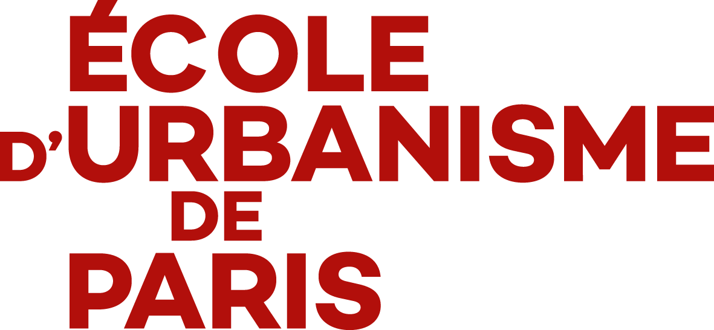
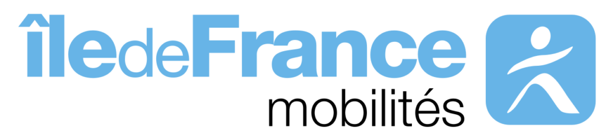
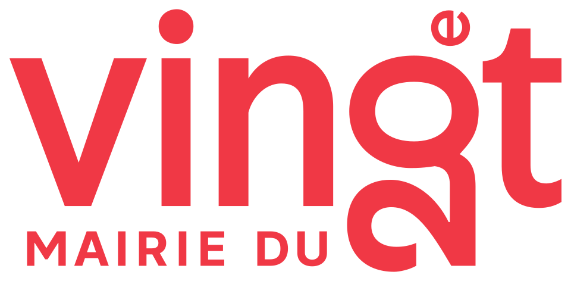
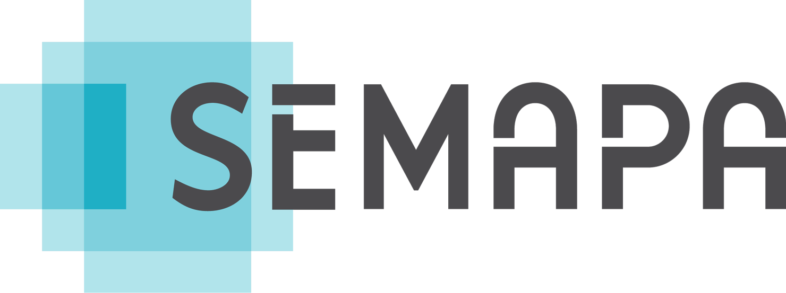
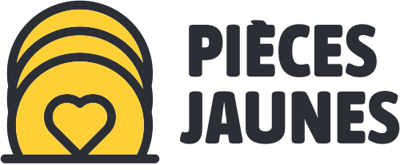
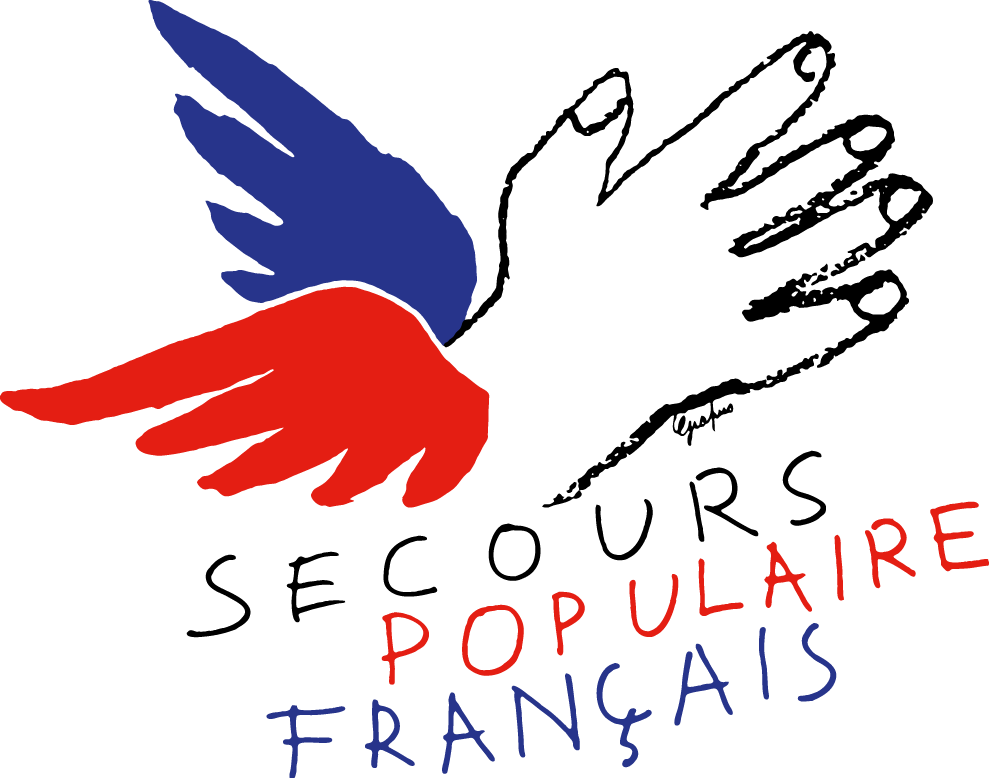
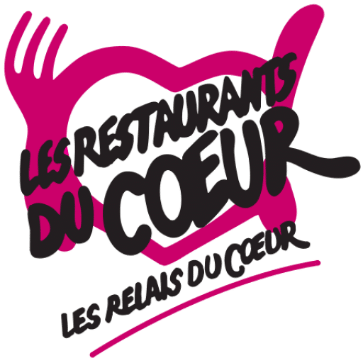
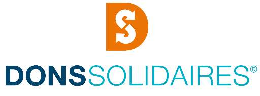
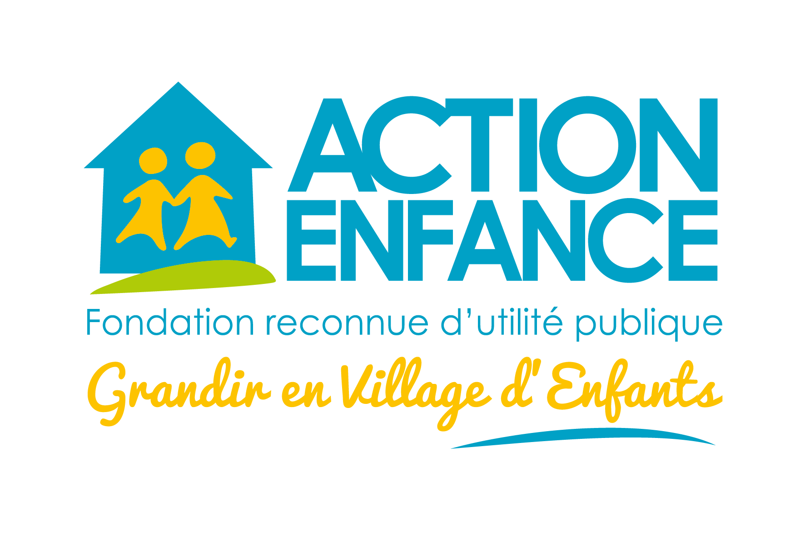

Étudiant urbaniste
Paris, France
Étudiant en Master 2 Territoire, Réseaux, Aménagement, Mobilités, Environnement (TRAME), mention Transports, Mobilités, Réseaux, à l'École d'Urbanisme de Paris, je suis une formation adossée à un partenariat avec l'École nationale des ponts et chaussées. Elle forme à analyser, concevoir et piloter les réseaux et infrastructures urbaines en croisant sciences humaines et sociales et sciences de l'ingénieur. Elle m'apporte des compétences en planification et en exploitation des systèmes de transport et de mobilité, en tenant compte de leur résilience, ainsi qu'en construction de stratégies partagées entre acteurs publics et privés en vue des métiers de la maîtrise d'ouvrage urbaine et de la conduite de projets territoriaux.
Mon parcours en géographie et urbanisme m'a par ailleurs donné une approche rigoureuse du diagnostic territorial et du montage de projet, ainsi qu'une bonne maîtrise de l'analyse statistique et cartographique grâce à des outils du métier comme QGIS.
En parallèle de mes études, j'occupe depuis trois ans un emploi étudiant à Disneyland Paris, où j'ai acquis une réelle capacité d'adaptation et de travail en équipe dans un environnement multiculturel à forte affluence, ainsi qu'une pratique courante de l'anglais au quotidien.
Je suis à la recherche d'un stage de fin d'études de 4 à 6 mois dans le cadre de mon mémoire de Master 2, disponible entre le 15 mars et le 30 septembre 2027.
Outils
QGIS, Magrit, PTV Visum, Inkscape, Canva, suite Office
Langues
Français, Anglais, Espagnol
2026-aujourd'hui, Champs-sur-Marne.
M2 Territoire, Réseaux, Aménagement, Mobilités, Environnement (TRAME), mention Transports, Mobilités, Réseaux
Répond aux enjeux de la mobilité et de la gestion des réseaux urbains, en croisant sciences humaines et ingénierie autour du diagnostic territorial et de la conduite de projet, pour préparer à des fonctions de maîtrise d'ouvrage et de pilotage de projets territoriaux.
2025–2026, Nanterre.
M1 Urbanisme et aménagement, parcours Projet Urbain et Montage d'Opérations (PUMO)
S'inscrit dans les enjeux de la fabrique urbaine et de la transition écologique des villes, avec des enseignements sur le droit de l'urbanisme, l'économie de l'aménagement et le projet urbain, pour préparer aux métiers d'aménageur et d'urbaniste en collectivité.
2022–2025, Paris 13e.
Licence Géographie et aménagement, parcours Environnement et Développement (GAED)
Traite des enjeux liés à la manière dont les sociétés aménagent leur territoire, en croisant géographie physique et humaine avec des outils comme la cartographie et les SIG, pour préparer à des métiers de l'urbanisme, de l'aménagement ou de la gestion des risques.
sep. 2026-aujourd'hui


Le développement d'un réseau de bornes de recharge d'accès public en Île-de-France : quelle trajectoire ?
Cet atelier vise à répondre à une commande d'Île-de-France Mobilités portant sur le développement du réseau de bornes de recharge électrique d'accès public en Île-de-France. En tant qu'autorité organisatrice des mobilités sur le territoire francilien, IDFM pilote la politique régionale de transition vers les véhicules électriques et hybrides rechargeables, l'un des leviers prioritaires pour réduire les émissions polluantes et les gaz à effet de serre issus du secteur des transports, un enjeu d'autant plus fort dans les zones denses où la recharge à domicile reste difficile d'accès, notamment pour les habitants de logements collectifs.
Notre travail consiste à analyser l'état actuel du maillage de bornes en Île-de-France, à identifier les zones où l'offre reste insuffisante au regard des besoins, et à comprendre les freins au déploiement rencontrés par les acteurs publics et privés du secteur, afin de proposer à IDFM des pistes concrètes pour orienter sa trajectoire de déploiement dans les années à venir.
avr. 2026
Sous-titre
Description à ajouter.
jan.–avr. 2026
Un territoire fragmenté face aux inégalités d'accessibilité vécues au quotidien dans la gare comme espace d'intermodalité
Ce diagnostic territorial porte sur les communes de Poissy, Carrières-sous-Poissy et Villennes-sur-Seine, organisées autour de la gare de Poissy, pôle multimodal majeur des Yvelines desservi par le RER A, la ligne J et un réseau de bus dense, qui accueillera prochainement le RER E (Eole) et le tramway T13.
Une première phase quantitative, à partir de données INSEE et de cartographies réalisées, interroge la manière dont la morphologie urbaine, la structure sociale des communes et l'offre de transport produisent des inégalités d'accessibilité entre les habitants. Une seconde phase qualitative, resserre l'analyse sur le parvis de la gare à travers observation de terrain, des entretiens et des captations visuelles/sonores, pour comprendre comment l'organisation et les aménagements de cet espace structurent les pratiques et les expériences vécues de l'intermodalité par ses usagers.
jan.–avr. 2026
Sous-titre
Description à ajouter.
sep.–déc. 2025
Sous-titre
Description à ajouter.
jan.–avr. 2025
Sous-titre
Description à ajouter.
sep.–déc. 2024
Sous-titre
Description à ajouter.
sep.–déc. 2024


Sous-titre
Description à ajouter.
jan.–avr. 2024
Bercy, porte d'entrée des voyageurs
Le projet étudie les mobilités à Bercy, dans le 12e arrondissement de Paris, à partir de l'observation d'un flux constant de voyageurs et de valises dans ce quartier où se concentrent la gare SNCF Paris-Bercy, la gare routière et la ligne 14 du métro.
La question centrale est de comprendre quelles motivations sous-tendent les choix de mobilité des usagers entre train, bus et métro, à travers une méthode combinant observation de terrain, questionnaire et entretiens semi-directifs. L'analyse distingue des voyageurs de passage motivés par le coût du billet, des navetteurs domicile-travail, une clientèle d'affaires et des usagers du métro séduits par sa rapidité, chaque mode ayant ses forces et faiblesses, la gare routière restant le maillon le plus fragile. Bercy apparaît ainsi comme une porte d'entrée des mobilités plutôt qu'une destination touristique.
mai 2023-aujourd'hui, Chessy.
Opérateur-Animateur d'attractions
Accueil, exploitation de l'attraction, sécurité et gestion des flux de visiteurs.
Vente en boutique et
Duty-Support caisse
Vente, conseil client et gestion de la caisse. Gestion du coffre et apport en numéraire.
Vente en kiosques de restauration
Prise de commande et service en kiosques extérieurs au sein du parc.
déc. 2022-jan. 2023, Noisy-le-Grand.
Vente en boulangerie-pâtisserie
Préparation, emballage et mise en rayon.
oct 2023-aujourd'hui, Chessy.
Programme de bénévolat des cast members de Disneyland Paris, engagés pour des causes de tous horizons.





Étudiant en Master 2 TRAME (Territoires, Réseaux, Aménagement, Mobilités, Environnement), mention Transports, Mobilités, Réseaux à l'École d'Urbanisme de Paris.
Je suis à la recherche d'un stage de fin d'études de 4 à 6 mois dans le cadre de mon mémoire de Master 2, disponible entre le 15 mars et le 30 septembre 2027.